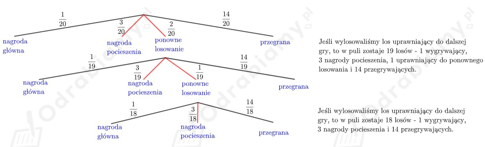
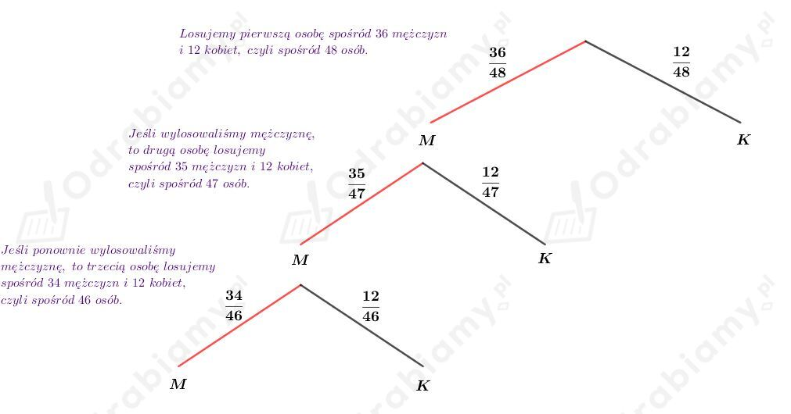
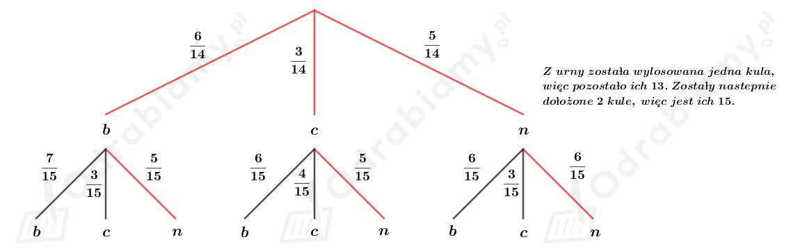

W puli 20 losów jest 1 nagroda główna, 3 nagrody pocieszenia, 2 losy uprawniające do ponownego losowania, a 14 losów jest przegrywających.
Przedstawiamy na drzewie ilustrację doświadczenia opisanego w treści zadania:

Niech A oznacza zdarzenie polegające na wygraniu nagrody pocieszenia przy zakupie jednego losu.
Wyznaczmy prawdopodobieństwo zdarzenia A:
Doprowadzając ułamki występujące w działaniu do wspólnego mianownika mamy:
Odp. Prawdopodobieństwo wygrania nagrody pocieszenie przy zakupie jednego losu wynosi 1/6.
Niech A będzie zdarzeniem polegającym na tym, że wycieczkę wygra co najmniej jedna kobieta.
Rozważamy zdarzenie przeciwne A' polegające na tym, że wycieczki nie wygra żadna kobieta.
Przebieg losowania przedstawmy za pomocą drzewka:

Wyznaczmy prawdopodobieństwo zdarzenia A'. Mamy:
Wyznaczmy prawdopodobieństwo zdarzenia A. Mamy:
Odp. Prawdopodobieństwo, że wycieczkę wygra co najmniej jedna kobieta wynosi 2539/4324.
Dana jest urna, w której są 3 kule białe, 4 czarne i 5 zielonych. Losujemy bez zwracania trzy kule z urny.
a)
Wśród wylosowanej kuli ma nie być kuli czarnej.
I metoda:
Jeżeli mamy nie wylosować kuli czarnej, to możemy losować kule zielone lub białe. Mamy 3 kule białe i 5 zielonych, zatem w sumie jest 8 kul, które spełniają założenie zadania. Wszystkich kul jest 12. W pierwszym losowaniu wybieramy jedną z ośmiu kul ze zbioru 12 kul, w drugim losowaniu wybieramy jedną z siedmiu kul ze zbioru 11 kul oraz w trzecim losowaniu wybieramy jedną z sześciu kul ze zbioru 10 kul. Prawdopodobieństwo, że wśród wylosowanych kul nie ma kuli czarnej wynosi:
II metoda:
Możliwości wylosowania kul spełniające warunki zadania to:
BBB, BBZ, BZB, ZBB, ZZB, ZBZ, BZZ, ZZZ.
Kule białe są 3, kul czarnych jest 4, kul zielonych jest 5, wszystkich kul jest 12. Prawdopodobieństwo, że wśród wylosowanych kul nie ma kuli czarnej wynosi:
b)
Wśród wylosowanych kul będzie kula czarna lub zielona.
Zauważmy, że jedyna możliwość, która nie spełnia tego warunku, to wylosowanie trzech kul białych.
Wyznaczmy prawdopodobieństwo wylosowania trzech kul białych. Mamy:
Więc prawdopodobieństwo zdarzenia polegającego na tym, że wśród wylosowanych kul będzie kula czarna lub zielona wynosi:
Dana jest urna z 6 kulami białymi, 3 kulami czarnymi i 5 kulami niebieskimi. Z tej urny losujemy bez zwracania jedną kulę i dokładamy dwie kule w kolorze wylosowanej kuli. Ponownie losujemy jedną kulę.
Przebieg losowania ilustrujemy za pomocą drzewa:

Wyznaczmy prawdopodobieństwo tego, że kula wylosowana za drugim razem jest niebieska. Mamy:
Odp. Prawdopodobieństwo tego, że kula wylosowana za drugim razem jest niebieska wynosi 5/14.